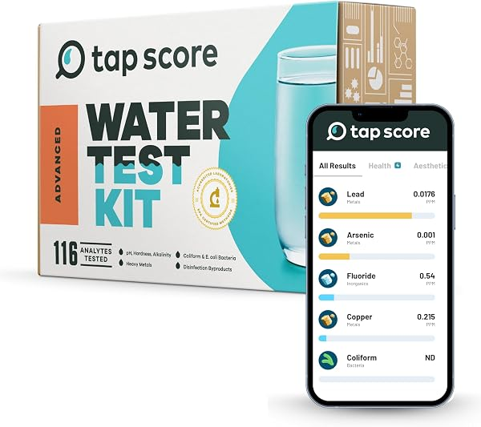

Does Reverse Osmosis Remove Fluoride? (Yes — Here's the Data)
PureFlow Lab is reader-supported. We may earn a commission when you buy through links in this guide — at no extra cost to you. As an Amazon Associate, we earn from qualifying purchases. See our Disclosure for details.
Yes — reverse osmosis removes fluoride, and it’s one of the few home filtration methods that does so effectively. A properly working RO system reduces fluoride by roughly 85-95% or more, taking typical tap water from around 0.7 mg/L down to trace levels. This guide explains how RO removes fluoride, how much it actually removes, why ordinary filters (like a Brita pitcher) don’t, and how to verify the result for your own water.
The Short Answer
Reverse osmosis is one of the most effective ways to remove fluoride from drinking water at home. The RO membrane’s pores are so fine that they block the fluoride ion along with other dissolved solids, typically achieving 85-95%+ reduction. For context, that takes water fluoridated at the U.S. public-health target of ~0.7 mg/L down to roughly 0.03-0.1 mg/L — essentially trace amounts.
This is genuinely useful information because most common water filters do not remove fluoride at all. Carbon-based filters — the technology in most pitcher, faucet, and refrigerator filters — are designed for chlorine, taste, and odor, and they pass fluoride straight through. If fluoride removal is your goal, you specifically need reverse osmosis (or one of a few specialized methods covered below).
How Reverse Osmosis Removes Fluoride
Reverse osmosis works by forcing water under pressure through a semipermeable membrane with pores around 0.0001 microns. Dissolved ions — including fluoride — are too large to pass through and get rejected, flushed away as wastewater. (For the full picture of how RO works, see What Is Reverse Osmosis Water?.)
Fluoride exists in water as a small dissolved ion, and while it’s tiny, the RO membrane still rejects the large majority of it. The exact percentage depends on the membrane’s condition, water temperature, pressure, and starting fluoride concentration, but a healthy system reliably hits the 85-95% range. Many RO systems are certified to NSF/ANSI Standard 58, which includes an optional fluoride-reduction claim — if fluoride removal matters to you, look for a system whose NSF/ANSI 58 certification specifically lists fluoride.
How Much Fluoride Does RO Actually Remove?
Independent testing and manufacturer data consistently put RO fluoride reduction at 85% to 95%+. In practical terms:
- Water fluoridated at ~0.7 mg/L → roughly 0.03-0.1 mg/L after RO
- Well water with naturally high fluoride at 4 mg/L → roughly 0.2-0.6 mg/L after RO
The reduction is proportional, so even water with naturally high fluoride comes down dramatically — though if your source water is very high (above the EPA limit, see below), you may want to test the output and consider a second pass or a dedicated fluoride stage to be sure.
Why Carbon and Pitcher Filters Don’t Remove Fluoride
This is the most common misconception in home water filtration. A standard activated-carbon filter — the kind in a Brita, PUR, or most faucet and fridge filters — works by adsorption, pulling chlorine, some organic compounds, and taste/odor molecules onto the carbon’s surface. Fluoride doesn’t bind to carbon, so it passes right through.
If you’ve been using a pitcher filter and assumed it removes fluoride, it almost certainly doesn’t. The methods that do remove fluoride are limited:
- Reverse osmosis — 85-95%+, the most practical whole-solution for homes
- Distillation — highly effective, but slow and energy-intensive for daily use
- Activated alumina — effective as a dedicated fluoride filter, but needs replacement and isn’t broad-spectrum
- Bone char — used in some specialty fluoride filters
Here’s how the common methods actually compare for fluoride specifically:
| Method | Fluoride Removal | Notes |
|---|---|---|
| Reverse osmosis | 85–95%+ | Most practical home solution; also removes lead, arsenic, nitrates, PFAS and more |
| Distillation | 95%+ | Very effective but slow and energy-intensive for daily use |
| Activated alumina | ~90% | Dedicated fluoride media; needs regular replacement, not broad-spectrum |
| Bone char | ~90% | Used in specialty fluoride filters |
| Activated carbon (Brita, PUR, fridge) | ~0% | Does not remove fluoride — removes chlorine and taste only |
| Water softener | 0% | Removes hardness (calcium/magnesium), not fluoride |
| Boiling | 0% (concentrates it) | Boiling does not remove fluoride — evaporation actually raises the concentration |
A point worth underlining: boiling water and refrigerator filters do nothing for fluoride, and boiling actually makes it slightly worse by evaporating off pure water and leaving the fluoride behind. Reverse osmosis is the practical answer for most homeowners because it removes fluoride and a wide range of other contaminants in one system.
Why People Remove Fluoride (The Neutral Version)
This is a topic where it’s worth being factual rather than taking a side. People reduce the fluoride in their drinking water for a few distinct reasons:
- Personal or dietary preference. Some people simply prefer to control their own fluoride intake and get it from toothpaste and dental care rather than drinking water.
- Naturally high fluoride. This is the clearest health-based reason. In some regions — especially private wells drawing from certain rock formations — fluoride occurs naturally at levels well above what’s intended. The EPA sets an enforceable maximum (MCL) of 4.0 mg/L to protect against skeletal fluorosis, and a secondary (cosmetic) standard of 2.0 mg/L to limit dental fluorosis. Water above these levels is a genuine reason to remove fluoride.
- Infant formula. Some parents choose low-fluoride water for mixing infant formula, a use case public-health agencies acknowledge.
For balance: community water fluoridation at the current U.S. target of ~0.7 mg/L is endorsed by the CDC, the American Dental Association, and the World Health Organization as a measure that reduces tooth decay, and major health bodies consider it safe at that level. Our role here isn’t to tell you whether to remove fluoride — it’s to tell you, accurately, that if you decide to, reverse osmosis is the most effective and practical home method. If you have a specific health concern, that’s a conversation for your doctor or dentist.
Fluoride: City Water vs Well Water
Where your water comes from changes both how much fluoride you have and how to find out:
City (municipal) water. If you’re on public water, your fluoride level is deliberately controlled — most U.S. utilities fluoridate to the CDC target of about 0.7 mg/L for dental health. You don’t have to guess: your utility publishes an annual Consumer Confidence Report (CCR) that lists the exact fluoride level, usually available on their website or mailed once a year. At 0.7 mg/L, RO brings you down to trace levels easily.
Well water. Private wells aren’t regulated or fluoridated, so the fluoride is whatever the local geology delivers — and that varies enormously. Some wells have almost none; others, especially in parts of the West, Midwest, and Southwest drawing from certain rock formations, run naturally above the EPA’s 4.0 mg/L limit. Well owners can’t look up a report — you have to test (see below). If your well runs high, RO is still effective, but verify the treated output and consider a dedicated fluoride stage in addition. Well water usually needs other treatment too; see our whole house RO guide and installation guide.
Which RO Systems Remove Fluoride?
All of them — fluoride removal is inherent to reverse osmosis, so every credible RO system reduces it. If fluoride is your specific reason for buying, prioritize a system whose NSF/ANSI 58 certification lists fluoride reduction. Our picks:
- Best Reverse Osmosis Systems for Home — under-sink picks, all remove fluoride
- Best Countertop Reverse Osmosis Systems — no-plumbing options for renters
- Brand deep-dives: APEC (NSF 58 certified, US-assembled), iSpring, Waterdrop, and Express Water
Any of these will take fluoride down to trace levels.
How to Test Your Water for Fluoride
Two practical options, depending on how precise you want to be:

Varify 17-in-1 Drinking Water Test Kit
The most-reviewed home water test kit (10,000+ ratings), covering hardness, lead, chlorine, pH, nitrates and more. Strip kits give a quick general read on your water, though fluoride specifically is hard to measure accurately with strips — for that, use a lab test below. ~$21.
Check Price on Amazon →
Advanced Home Water Test Kit — EPA-Certified Lab Analysis
A mail-in lab kit that returns a precise, certified analysis including fluoride. Pricier, but it’s the accurate way to know your true fluoride level — worth it if you’re on a well or specifically targeting fluoride. ~$269.
Check Price on Amazon →A note on TDS meters: a TDS meter tells you total dissolved solids dropped (confirming your RO membrane works overall), but it does not isolate fluoride. For a true fluoride number, you need a fluoride-specific or lab test. On municipal water, your utility’s annual Consumer Confidence Report also lists the fluoride level they add.
FAQ
Does reverse osmosis remove 100% of fluoride?
No filter removes 100%, but reverse osmosis removes roughly 85-95%+ of fluoride — enough to take typical fluoridated water down to trace levels. The exact figure depends on membrane condition, water pressure, temperature, and starting concentration. For very high source fluoride, testing the output is wise.
Does a Brita or pitcher filter remove fluoride?
No. Brita, PUR, and most pitcher, faucet, and refrigerator filters use activated carbon, which removes chlorine and improves taste but does not remove fluoride. Reverse osmosis is the practical home method that does.
Is it bad to drink reverse osmosis water with no fluoride?
It’s a personal choice. Public-health agencies fluoridate water to reduce tooth decay, so if you remove fluoride from your drinking water, you’ll want to make sure you’re getting dental protection elsewhere (fluoride toothpaste, regular dental care). For the broader question of RO water and health, see Is Reverse Osmosis Water Good for You?.
What’s the best way to remove fluoride from well water?
Reverse osmosis is the most practical option, removing 85-95%+. If your well has naturally very high fluoride (above the EPA’s 4.0 mg/L limit), test the RO output to confirm it’s brought down enough, and consider a dedicated activated-alumina fluoride stage in addition to RO. Well water often needs other treatment too — see our whole house RO guide.
How do I know my RO system is removing fluoride?
Use a lab test (the EPA-certified mail-in kit above, or a service like a certified water lab) to measure fluoride before and after. A TDS meter confirms the system is reducing total dissolved solids overall but won’t give you a fluoride-specific number.
Does boiling water remove fluoride?
No — and it can make it slightly worse. Boiling evaporates pure water as steam and leaves the fluoride behind, so the concentration in what remains actually increases. Boiling kills bacteria, but for fluoride you need reverse osmosis, distillation, or a dedicated fluoride filter.
Does a refrigerator or pitcher filter remove fluoride?
No. Refrigerator filters, Brita, PUR, and almost all pitcher and faucet filters use activated carbon, which doesn’t remove fluoride. If your fridge or pitcher filter is your only filtration, your water still contains essentially all of its fluoride.
Does a water softener remove fluoride?
No. A water softener swaps calcium and magnesium (hardness) for sodium via ion exchange — it doesn’t target fluoride and leaves it in the water. Softeners and RO solve different problems; many homes use a softener for the whole house plus an RO system at the kitchen tap.
How much does it cost to remove fluoride with reverse osmosis?
The system itself runs roughly $150–$400 for a good under-sink or countertop RO (see our best RO systems guide), plus about $50–$120/year in replacement filters. That’s the all-in cost to remove fluoride and a long list of other contaminants — far cheaper per gallon than bottled water over time.
Bottom Line
Reverse osmosis removes fluoride — about 85-95%+ — making it the most effective and practical home method for the job, and far more effective than the carbon pitcher filters most people own (which remove none). Whether you want to remove fluoride is a personal decision, but if you do, RO is the answer. Look for a system whose NSF/ANSI 58 certification lists fluoride, and verify the result with a lab test if you’re targeting fluoride specifically — especially on well water.
Ready to choose a system? Start with our best reverse osmosis systems guide, or the countertop guide if you can’t install under-sink.
Keep Reading
- What Is Reverse Osmosis Water? — how RO works and everything it removes
- Best Reverse Osmosis Systems for Home — fluoride-removing under-sink picks
- Best Countertop Reverse Osmosis Systems — no-plumbing options
- Is Reverse Osmosis Water Good for You? — the health and minerals question
- How to Install a Reverse Osmosis System — DIY setup once you’ve chosen one